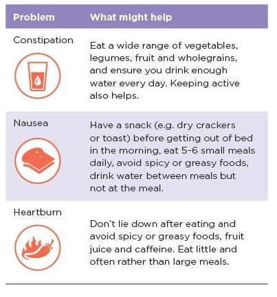
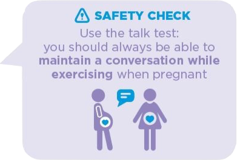

Health & wellbeing during pregnancy
Healthy eating during pregnancy
What you eat and drink is vital to your overall health and wellbeing. Whilst eating healthily is important for everyone, it becomes even more so when you're pregnant (and when you are trying to conceive), influencing both your own wellbeing as well as that of your developing baby. For example, eating discretionary or 'sometimes' foods (often called junk foods), such as those high in fat and sugar, can cause your unborn baby to develop a preference for these foods during childhood and later life.
Healthy eating during pregnancy doesn't have to be hard! It often just means changing the amount of different foods you eat so that your diet is varied and nutritious.
In this section:
- Common myths debunked
- What does healthy eating during pregnancy involve?
- Recommended daily serves from the 5 food groups
- Special nutrient needs during pregnancy
- Foods to avoid when you are pregnant
- Helpful hints for some common issues
Because well-meaning advice from friends and family (and the internet) can often be conflicting and confusing, let's deal with a couple of the common myths first.
Common myths debunked
Myth: you need to be 'eating for two'
Truth: there is no need to 'eat for two'
Pregnant or not, you've no doubt heard of this one before! The reality is that the amount of food you need depends on many things, including:
- your weight before you became pregnant
- how far along you are with your pregnancy
- how active you are
The type of food you eat throughout your pregnancy, not the amount, is far more important. For example, you should be eating the same amount of food during the first trimester of your pregnancy as you were before you were pregnant. You may need to eat slightly more during your second and third trimesters, such as an extra piece of fruit per day, but again, this depends on where you are with your pregnancy and how active you are.
Myth: cravings are signals of what your baby needs
Truth: science does not support cravings as being a sign that your baby needs certain foods
You've likely heard some of the weird and wonderful foods (and combinations!) that pregnant women might crave. You may even have experienced some yourself.
Although some women experience cravings for certain foods, there is no evidence that cravings are a sign that your baby needs certain foods. It can be hard, especially if you're struck by a craving, but try to:
- make sure your baby (and you!) are getting the nutrients they need by eating healthily and avoiding discretionary or 'sometimes' foods (often called junk foods) which are often high in sugar, fat and salt
- only eat when you're actually hungry
Myth: eating peanuts, eggs and other commonly allergenic foods must be avoided to prevent your baby from developing allergies
Truth: only avoid allergenic foods if you are allergic to them yourself
The foods you eat whilst pregnant (or breastfeeding) do not affect the risk of your baby getting asthma, eczema or other allergies. The only reason you should avoid eating peanuts or other commonly allergenic foods is if you're allergic to them yourself.
What does healthy eating during pregnancy involve?
Just like when you're not pregnant, a healthy diet includes foods from each of the 5 major food groups, plenty of water and limiting discretionary or 'sometimes' foods such as sugary drinks, chips and chocolate. There are also a few additional foods you should avoid when you're pregnant.
To make sure you are eating well during your pregnancy, aim to enjoy a variety of foods from each of the 5 major food groups every day.
Recommended average daily number of serves from the 5 food groups
Not sure what 'a serve' looks like?
Eating the recommended number of serves from each of the 5 major food groups doesn't mean you have to eat piles and piles of the same food - the more variety you add, the more variety in nutrients you gain and the more interesting it is for your taste buds!
The following are guides to how big a serve is for foods within each of the 5 food groups.
Aim for 5 serves of vegetables every day while you're pregnant.

Source: National Health and Medical Research Council
Aim for 2 serves of fruit every day while you're pregnant.

Source: National Health and Medical Research Council
Aim for 8 ½ serves of grain foods every day while you're pregnant.

Source: National Health and Medical Research Council
Aim for 3 ½ serves of protein foods every day while you're pregnant.

Source: National Health and Medical Research Council
Aim for 2 ½ serves of dairy and/or alternatives every day while you're pregnant.

Source: National Health and Medical Research Council
Special nutrient needs during pregnancy
While all nutrients are important, when you're pregnant you should increase your intake of certain nutrients that play an important role in your baby's growth and development. These include iodine, folate, iron, protein and calcium.

Good sources of these important nutrients include:
- Iodine: supplements are recommended throughout your pregnancy and when breastfeeding
- folate: green leafy vegetables, beans, fortified breakfast cereals, wholegrain foods, tofu, fruit and nuts; folate supplements are also recommended for at least a month before conception and throughout your first trimester
- iron: lean red meat, canned tuna, nuts and legumes (as well as many of the folate sources)
- protein: lean meat, cooked eggs, salmon or tuna, beans, nuts, lentils, chickpeas and tofu
- calcium: low-fat milk, yoghurt, hard cheeses and calcium-enriched soy drinks
Foods to avoid when you are pregnant
There are some foods that you need to be careful of when you're pregnant - some are OK in small amounts or if prepared in certain ways but others should be avoided all together.

Limit:
- fish high in mercury like flake, swordfish and marlin - the mercury builds up in your body, passing through the placenta into your baby and can affect their developing brain; consume no more than one serve (150g) every two weeks but try replacing with other types of fish such as salmon or tuna instead.
- caffeine as this increases your heart rate and blood pressure and can cross the placenta into your developing baby; aim for less than 200mg/day or about 1-2 instant coffees or 1 café style coffee (don't forget tea, cola, energy drinks and chocolate also contain caffeine)!
- discretionary or 'sometimes' foods, (often called junk foods) which are often high in sugar, fat and salt, and may cause your unborn baby to develop a preference for these foods during childhood and later life.
Avoid:
- potential sources of listeria such as soft cheeses (brie, camembert, ricotta, feta and blue cheese), sandwich meats, ready-to-eat chilled foods, bean sprouts, pre-prepared salads, pâté and undercooked food, especially meat; these might cause you and/or your developing baby serious illness
- raw eggs as they may contain salmonella
- alcohol all together - not drinking alcohol is the safest option
Smart snacking
Try to resist the urge to snack constantly. When snacking, choose foods from the 5 food groups - these will satisfy your hunger and help you to reach your recommended servings for the day while supplying the nutrients you and your developing baby need. Opt for vegetables, dairy products such as yoghurt and reduced fat cheese, fruit, unsalted nuts, tomato on wholegrain bread, toast or pita bread and fresh hummus.
Avoid overeating and gaining excessive weight by:
- stopping and asking yourself how hungry you actually are by rating your appetite on a scale of 1-10 before eating - could you be thirsty, bored or anxious (for example) instead?
- prioritising foods from the 5 food groups as these are healthier 'everyday' options
- choosing smaller portions - you can always go back for another portion if you are still hungry afterwards!
Helpful hints for some common issues
Nausea, heartburn and constipation are quite common during pregnancy. Here are a few things that might help.

Adapted with permission from NSW Get Healthy Information and Coaching Service, NSW Health and the Raising Children website, Australia's trusted parenting website.
Alcohol in pregnancy
 It is best not to combine alcohol with pregnancy. This includes if you are trying to conceive - it's safest not to drink any alcohol at all. In fact, your partner should also limit his alcohol intake as drinking more than two
standard drinks per day can affect his fertility too, reducing the chance of a healthy pregnancy.
It is best not to combine alcohol with pregnancy. This includes if you are trying to conceive - it's safest not to drink any alcohol at all. In fact, your partner should also limit his alcohol intake as drinking more than two
standard drinks per day can affect his fertility too, reducing the chance of a healthy pregnancy.
 It's safest not to drink any alcohol when pregnant because it can pass through the placenta and into the bloodstream of your developing baby. This can affect the development of your baby's brain and increases your risk of miscarriage and premature birth. In severe cases, drinking alcohol when you're pregnant can cause foetal alcohol spectrum disorder (FASD),
It's safest not to drink any alcohol when pregnant because it can pass through the placenta and into the bloodstream of your developing baby. This can affect the development of your baby's brain and increases your risk of miscarriage and premature birth. In severe cases, drinking alcohol when you're pregnant can cause foetal alcohol spectrum disorder (FASD),
 affecting the physical and mental characteristics of your baby as well as their behaviour. Even small amounts of alcohol during pregnancy can lead to problems with your baby's learning, emotional and social development.
affecting the physical and mental characteristics of your baby as well as their behaviour. Even small amounts of alcohol during pregnancy can lead to problems with your baby's learning, emotional and social development.
Not being able to drink alcohol due to  pregnancy affects different people in different ways. How it affects you will depend on how much of a role alcohol normally plays in your life. For example, if alcohol is the way you unwind or manage stress, it's important to look for other ways to relax or treat yourself. Eating healthily and getting active can also help to unwind, so unless your GP or midwife have advised you otherwise, try to get in about 30 minutes of moderate exercise on most days of the week, even if you were not active before your pregnancy.
pregnancy affects different people in different ways. How it affects you will depend on how much of a role alcohol normally plays in your life. For example, if alcohol is the way you unwind or manage stress, it's important to look for other ways to relax or treat yourself. Eating healthily and getting active can also help to unwind, so unless your GP or midwife have advised you otherwise, try to get in about 30 minutes of moderate exercise on most days of the week, even if you were not active before your pregnancy.
There's certainly no need to feel like you are missing out, even when out!  Opt for non-alcoholic drinks like water, milk, herbal teas, mocktails (e.g. lime and soda instead of vodka, lime and soda) as well as non-alcoholic wines and beers, which are becoming more commonly available. Just remember to watch for added sugars in mocktails (cordials, soft drinks etc) and to always check the label on non-alcoholic drinks as some will still contain small amounts of alcohol.
Opt for non-alcoholic drinks like water, milk, herbal teas, mocktails (e.g. lime and soda instead of vodka, lime and soda) as well as non-alcoholic wines and beers, which are becoming more commonly available. Just remember to watch for added sugars in mocktails (cordials, soft drinks etc) and to always check the label on non-alcoholic drinks as some will still contain small amounts of alcohol.
Cutting down or stopping alcohol can be hard if it is a big part of your life but it is best for your health and your baby's. You can always speak with your GP or midwife about cutting back on alcohol and don't forget that there is always someone to talk to and plenty of other support available if you need it, so don't be afraid to reach out!
Adapted with permission from the Raising Children website, Australia's trusted parenting website.
Smoking and pregnancy
 Just as smoking is bad for your health, it can also negatively affect all stages of having a baby, including falling pregnant in the first place, which can be harder if either you or your partner smokes.
Just as smoking is bad for your health, it can also negatively affect all stages of having a baby, including falling pregnant in the first place, which can be harder if either you or your partner smokes.

Once you're pregnant, if you smoke, or are around other people's smoke - even the smoky smell left on clothing/hair/furniture for example - your baby smokes too.
This brings with it many risks, including an increased chance of:
- miscarriage
- premature birth
- stillbirth
- low birth weight of your baby

Cigarette smoke, whether smoked by you or others nearby, can:
-
 harm your developing baby's brain and lungs
harm your developing baby's brain and lungs
-
increase their risk of developing asthma, cleft lip and palate, and other childhood illnesses

- reduce your milk supply and put harmful substances into your breastmilk (however, breastfeeding is still best choice for your baby, even if you do smoke)
 Smoking during pregnancy and/or exposing your baby to smoke once they're born is also strongly linked with sudden infant death syndrome (SIDS).
Smoking during pregnancy and/or exposing your baby to smoke once they're born is also strongly linked with sudden infant death syndrome (SIDS).
 The good news is that it is never too late to quit!
The good news is that it is never too late to quit!
Even just one hour after quitting, the risk of pregnancy complications decreases. Just two days of not smoking can put your baby's growth back on track.
 It's not easy to quit but you don't have to do it on your own. The Quit program has free phone apps (including Quit for you - Quit for Two, aimed at those who are currently, or are trying to fall pregnant), telephone and online coaching to support you through the process.
It's not easy to quit but you don't have to do it on your own. The Quit program has free phone apps (including Quit for you - Quit for Two, aimed at those who are currently, or are trying to fall pregnant), telephone and online coaching to support you through the process.
Adapted with permission from the Raising Children website, Australia's trusted parenting website.
Physical activity in pregnancy
We all know that our bodies were designed to move, but is this still the case when you're pregnant, and if so, how much and what sort of physical activity is safe?
In this section:
- Benefits of being active during pregnancy
- Getting active safely
- Tips for being active
- Special exercises for pregnancy
- Exercises to avoid
- When to stop
For most women, exercising at a level they are comfortable with during pregnancy can help them:
- cope with the pregnancy and then giving birth
- tackle some of the common complaints of pregnancy such as varicose veins, tiredness and swollen feet and ankles
Other benefits of being active during pregnancy include:
Provided you have not been told something different by your GP or midwife, it is recommended that you do 30 minutes of moderate exercise on most days of the week, even if you were not active before your pregnancy.
This doesn't have to be in one go either - you can break it up and do three lots of 10 minutes instead!
Being active safely
To make sure both you and your baby are safe during exercise, always:
- take things easy - use the 'talk test' to make sure you are exercising at a level that is comfortable
- be careful you don't overheat and remember to drink plenty of water
- wear suitable clothing
- warm up and cool down to prevent injuries
- stop when you are tired or if you feel any pain that doesn't settle quickly
- check that the instructor of any exercise classes you take is qualified and let them know that you're pregnant
Tips for being active
Being physically active on a regular basis can be hard at times, especially when you feel tired but every little bit helps.
Try including activity in your normal routine by:
- using the stairs instead of the lift
- walking to the shops instead of driving or parking further away from the entrance so you need to walk further
- getting off the bus/tram a stop earlier
- going for a walk with friends or family when catching up
Finding something you enjoy will make it easier, especially if you can make being active a social occasion or an opportunity to relax and escape.
As your baby continues to grow, you may need to slow down or reduce the amount of physical activity you do but try to keep as active as you can for as long as possible to continue enjoying all the benefits that come with it.
Special exercises for pregnancy
As well as keeping you fit, some exercises can also help you strengthen some of the muscles which are under extra pressure when you are pregnant - your pelvic floor, stomach and back. Read more about pelvic floor care.
Exercises you should avoid
Some types of activity should be avoided when you are pregnant. These include:
When to stop
If you experience any complications, are uncomfortable or even just unsure at any stage during your pregnancy, it is best to stop exercising and speak with your GP or midwife for further advice.
After your baby is born and for future pregnancies
Once your baby is born, increasing the amount of physical activity you do can help you lose weight (if you would like to), boost your energy levels and is a great way to play with your baby!
Read more about being active as a new mum.
Adapted with permission from NSW Get Healthy Information and Coaching Service, NSW Health
Pelvic floor care

Your pelvic floor is a set of muscles that hold your bladder, uterus and bowel in place and give you control over your bladder and bowel.
If these muscles are weak, you might:
- feel 'heavy' around your bottom
- have trouble controlling wind or leak urine when you sneeze, cough, laugh or exercise
- feel an urgent need to urinate
 Being pregnant and giving birth is a common cause of weak pelvic floor muscles, but did you know that the straining during a bowel movement due to constipation can also weaken them? Ensuring your diet includes plenty of fruit, vegetables and water can help relieve constipation and protect your pelvic floor muscles.
Being pregnant and giving birth is a common cause of weak pelvic floor muscles, but did you know that the straining during a bowel movement due to constipation can also weaken them? Ensuring your diet includes plenty of fruit, vegetables and water can help relieve constipation and protect your pelvic floor muscles.
You can strengthen your pelvic floor by:

- only going to the toilet when your bladder feels full (not 'just in case') - make sure you put your feet close to the toilet, keeping them flat on the floor (or a step), relax and lean forward
- regularly doing pelvic floor exercises - squeeze, lift and hold (like you're trying to hold in urine) but remember to keep breathing and try not to tense your shoulders or buttocks, then relax your muscles before squeezing and holding again - try:
- seeing how many breaths you can hold for and then repeat this set 3-5 times
- quickly squeezing and lifting 10 times (1 set)
- doing the above sets when you're lying down, sitting or standing

 Make strengthening your pelvic floor part of your day by doing exercises whenever you wash your hands, clean your teeth, have a shower, when you wait for the traffic lights to change or some other regular part of your day that you will remember!
Make strengthening your pelvic floor part of your day by doing exercises whenever you wash your hands, clean your teeth, have a shower, when you wait for the traffic lights to change or some other regular part of your day that you will remember!

Try to always prepare (and protect) your pelvic floor before you sneeze, cough, squat or lift anything by squeezing your muscles.

If you need any help with these exercises or are worried at all, a good place to start is by speaking to your GP, midwife.
Adapted with permission from the Raising Children website, Australia's trusted parenting website.
Weight gain during pregnancy
Gaining too much or not enough weight when you are pregnant can place you and your baby at risk of complications during your pregnancy, at birth and later on in life.

The amount of weight you should put on during your pregnancy depends on if you have a single or multiple pregnancies (e.g. twins) and what your body mass index (BMI) was before you were pregnant. This is calculated by dividing your weight (kg) by your height (m) squared - use our BMI calculator.
As a rule of thumb, the higher your pre-pregnancy BMI, the less weight you will need to gain during your pregnancy as your body will already have enough energy (kilojoules/calories) stored for your pregnancy and then breastfeeding.
Once you know your BMI, use the following tables to work out roughly how much weight you should gain.


Why your weight matters
Studies have shown that the nutrients your baby receives before they are born can affect their health later in life. Babies born with an unusually low or high weight, especially, can be at a higher risk of obesity and chronic diseases when they become adults.
If you don't gain enough weight, you are at higher risk of:
- going into labour too early
- having a smaller than average baby
- experiencing problems with breastfeeding
Gaining too much weight has risks for you and your baby.
Your baby has a higher risk of:
- weight problems throughout their life - being born larger than normal and overweight/obesity during both childhood and as an adult
- having an abnormally low blood glucose level at birth which may need treatment
You are at a higher risk of:
- pre-eclampsia - a serious condition that causes high blood pressure and can threaten both your and your baby's life
- gestational diabetes (diabetes during pregnancy) - which can cause complications during your pregnancy and birth and can have long-term health problems for you and your baby
- blood clots in your pelvis or legs
- breastfeeding problems
- needing a caesarean section to give birth, which can have complications such as blood loss and infections
- not being able to lose your baby weight, which makes you more likely to be overweight or obese in the future
 If you don't have scales at home, ask to use the scales when you go in for routine check-ups.
If you don't have scales at home, ask to use the scales when you go in for routine check-ups.
After your baby is born and for future pregnancies
Achieving a healthy weight (BMI between 18.5-25kg/m2) once your baby is born lowers your risk of developing diseases like diabetes, heart disease and some cancers when you get older. If you plan on having another baby, try to make sure you are at a healthy weight first - this will not only assist with being able to conceive, it will also give your new pregnancy the best possible starting point.
Adapted with permission from NSW Get Healthy Information and Coaching Service, NSW Health.